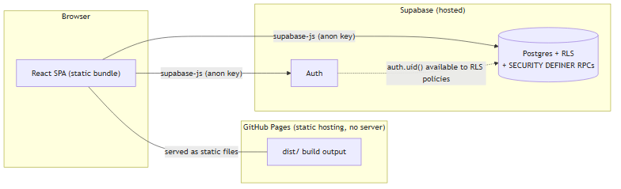
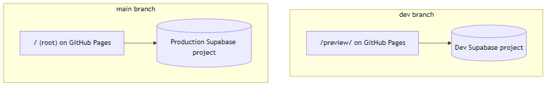
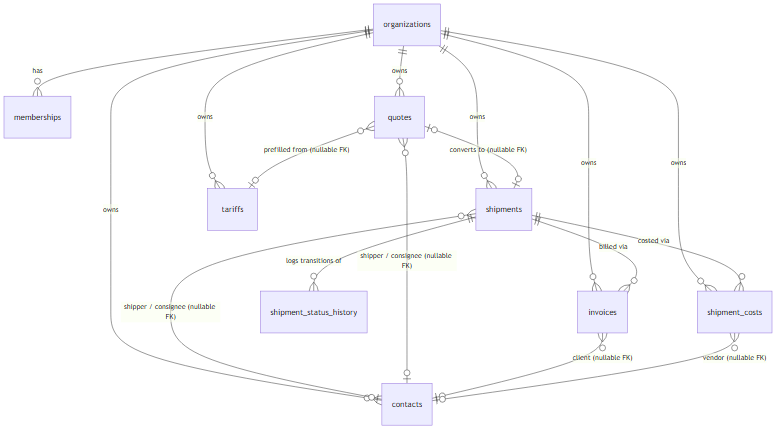
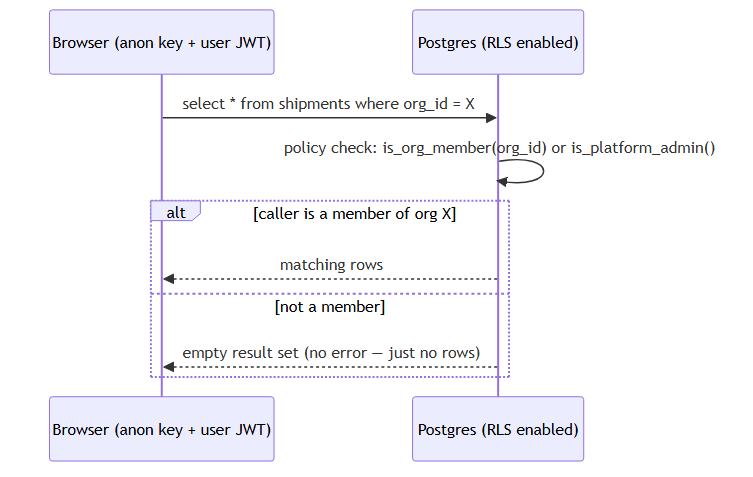
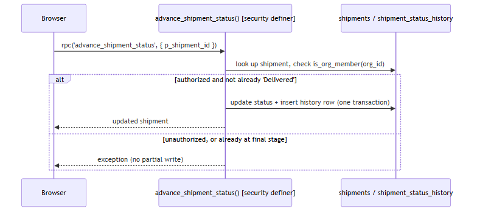

Requirements Specification
What the app actually does today, as user stories with quantifiable acceptance criteria — not aspirational copy. Full file: docs/srs.md
Four actors: Member (default), Admin (can manage team membership), Owner (cannot be demoted/removed by an Admin), and an external Consignee who never has an account at all.
| Module | Core requirement |
|---|---|
| Auth & Orgs | Signup/login/invite-code join; zero cross-org data visibility under any code path, verified with an automated 3-user/2-org test. |
| Booking | Ocean/Air/Truck with mode-specific fields; auto-generated mode-prefixed refs; IATA volumetric weight for Air (÷6000, chargeable = max(gross, volumetric)). |
| Directory | Shipper/consignee/agent/vendor contacts with autocomplete + auto-create on unmatched name, race-condition-safe. |
| Roles & Team | Promote/demote/remove members; Owner protection and no-self-promotion enforced server-side, not just hidden in the UI. |
| Status Workflow | Fixed 5-stage sequence, forward-only, every transition logged; no client path can skip or reverse a stage. |
| Quoting | Tariff-prefilled quotes, one-click conversion to a real booking. Known gap: a double-submit race on conversion (tech debt). |
| Accounting | Multi-currency invoicing with live FX, Owner/Admin-only rate edits (DB-trigger enforced), 0–30/31–60/61+ day aging. |
| Tracking Portal | No-login shareable link; verified zero session touch, and the payload verified to exclude staff email/FX/vendor data at the network level, not just the rendered page. |
System Design
Architecture diagrams built directly from the real schema, each one actually rendered to confirm it's valid before being committed. Full file: docs/sdd.md
SST Freight is a fully static app with no backend service of its own — the browser talks directly to Supabase (Postgres + Auth) using the public anon key. Every trust boundary that matters is enforced inside Postgres, via Row-Level Security and SECURITY DEFINER functions — not by a server that doesn't exist.



Two request patterns — the rule for which one a new feature should use is in ADR-0002 and ADR-0006:


Architecture Decision Records
Immutable once merged — a changed decision gets a new ADR that supersedes the old one, never an edit. Index: docs/adr/README.md
| # | Decision | Why it matters |
|---|---|---|
| 0001 | Multi-tenancy via Postgres RLS | Isolation is provable, not conventional — a frontend bug can't leak cross-tenant data. |
| 0002 | SECURITY DEFINER RPCs for privileged mutations | The set of things a client can do is exactly the set of RPCs that exist — no broader grant to reach around. |
| 0003 | Contact FK + denormalized name snapshot | A renamed/deleted contact never rewrites historical bookings, quotes, or invoices. |
| 0004 | Forward-only shipment status machine | Direct UPDATE revoked from the client entirely — the state machine can't be bypassed, only used correctly. |
| 0005 | Platform Super-Admin, manually provisioned | Zero client-reachable path exists to grant or discover it — no attack surface to later lock down. |
| 0006 | Quote conversion skips a dedicated RPC | Draws the actual line for when ADR-0002 applies vs. when plain RLS-gated calls are enough. |
| 0007 | Live FX rates, role-gated override | Documents a real lesson: curl verifying an API's CORS support is not the same as a browser verifying it. |
| 0008 | Dedicated public tracking token | A leaked customer link is revocable independently of the shipment record itself. |
| 0009 | Query-param public routing, not a path | A path-based link would 404 on GitHub Pages — no router, no server-side rewrites. |
API Reference
Every supabase.rpc()-callable function — this app's real API surface, since there's no separate backend. Signature table is auto-generated from schema.sql. Full file: docs/api-reference.md
| Function | Granted to |
|---|---|
create_organization(p_name, p_color) | authenticated |
join_organization(p_invite_code) | authenticated |
list_org_members(p_org_id) | authenticated |
update_member_role(p_membership_id, p_new_role) | authenticated |
remove_member(p_membership_id) | authenticated |
advance_shipment_status(p_shipment_id) | authenticated |
list_shipment_status_history(p_shipment_id) | authenticated |
get_public_shipment_tracking(p_token) | anon, authenticated |
get_public_shipment_tracking is the sole no-login entry point, and its payload is hand-curated to exclude anything not meant for a stranger with just a link.
Tech Debt Registry
Deliberate shortcuts in shipped code — not silent oversights, and not the same as roadmap.html's "not yet built" gaps. Full file: docs/tech-debt.md
- No delete/archive anywhere — every table supports select/insert/update only.
- Converted bookings miss mode-specific fields — quotes never captured container size, vessel name, etc.
- Invoice
amount_inrcan go stale iffx_rateis edited after creation — no UI updates both together. - No status "go back" path — the forward-only machine (ADR-0004) has no correction flow.
- Quotes are single-rate, no itemized line items, and have no sent/accepted/rejected states.
- Quote-conversion double-submit race — verified against the actual code, not assumed: the update lacks a
status = 'draft'guard. - No GST/tax handling anywhere in Accounting.
- P&L is org-wide totals only — no per-shipment profitability view yet.
- No "leave organization" or ownership-transfer flow.
- One test suite has a live-API fragility — an FX-rate assertion hardcodes an expected value from a source that legitimately changes.
Migration Runbook
How schema changes actually get applied, and what does/doesn't roll back. Full file: docs/migration-runbook.md
Standing rule: dev first, always. Verify against the dev Supabase project before touching production — no exceptions, regardless of how small a change looks.
schema.sql via a single client.query() call is atomic — a live test confirmed a deliberately-broken multi-statement script left zero trace after failing. This is not confirmed for the Supabase Dashboard SQL Editor path that new setups use instead — don't assume the two behave the same.
Repository Essentials
The two blueprint items that are just standard project files, not something built specifically for this initiative.
README.md
Setup, hosting, two-environment deploy workflow, and links to every doc on this page.
package.json
React 18, Vite 5, TypeScript 5, @supabase/supabase-js — the entire runtime dependency list, deliberately minimal.
CLAUDE.md
Which document to update for which kind of change — the map that keeps everything on this page from going stale.